수질환경기사 (2003-03-16 기출문제)
1과목: 수질오염개론
1. 다음 설명중 틀린 것은?
- 지하수는 지표수보다 경도가 높다.
- 지하수는 세균에 의한 유기물의 분해가 주된 생물작용이 된다.
- 지하수는 유리탄산의 소모로 약알카리를 나타낸다.
- 자연수의 PH는 일반적으로 CO2와 CO32-의 비율로서 결정된다.
(정답률: 67%)

2. 알카리도(Alkalinity)에 관한 설명으로 옳지 않은 것은?
- P-알카리도와 M-알카리도를 합친 것을 총알카리도라 한다.
- 알카리도(CaCO3 mg/L)계산은 [(A× N× 50000)/V]로 나타낸다.(A:주입된 산의 부피(mL),N:주입된 산의 N농도, V:시료의 부피(mL), 50000(mg):CaCO3 당량)
- 실용목적에서는 자연수에 있어서 수산화물, 탄산염, 중탄산염 이외, 기타물질에 기인되는 알카리도는 중요하지 않다.
- 부식제어에 관련되는 중요한 변수인 Langelier포화지수 계산에 적용된다.
(정답률: 56%)
3. 하천의 자정작용에 관한 기술이다. 옳지 않은 것은?
- 하천의 자정작용은 일반적으로 겨울보다 여름이 더활발하다. 그러므로 수온이 상승하면 자정계수(f)는 커진다.
- 하천의 자정작용 중에는 물리적 작용과 미생물에 의한 분해 및 화학적 작용도 포함된다.
- 하천에서 활발한 분해가 일어나는 지대는 혐기성세균이 호기성세균을 교체하며 fungi는 사라진다. (Whipple의 4지대 기준)
- 하천이 회복되고 있는 지대는 질산염의 농도가 증가 한다.(Whipple의 4지대 기준)
(정답률: 71%)
4. 산성강우에 관한 설명으로 알맞지 않은 것은?
- 주요원인물질은 유황산화물,질소산화물,염산을 들수있다.
- 대기오염이 혹심한 지역에 국한되는 현상으로 비교적 정확한 예보가 가능하다.
- 초목의 잎과 토양으로 부터 Ca++, Mg++,K+등의 용출 속도를 증가시킨다.
- 보통 대기 중 탄산가스와 평형상태에 있는 물은 약 PH 5.6의 산성을 띠고 있다.
(정답률: 79%)
5. 해류에 관한 설명으로 알맞지 않는 것은?
- tidal current:태양과 달의 영향으로 발생된다.
- tsunamis:해저 지반의 이동 및 지형에 따라 발생된다
- upwelling:바람과 해양 및 육지의 상호작용으로 형성되는 상승류이다.
- 심해류:해수의 온도와 염분에 의한 밀도차에 의하여 발생된다.
(정답률: 69%)
6. 적조 발생의 요인이 아닌 것은?
- 수괴의 연직안정도가 작다
- 영양염의 공급이 충분하다
- 해수의 염소량이 저하된다
- 해저의 산소가 고갈된다
(정답률: 79%)
7. 산소의 포화농도가 9 mg/ℓ 인 하천에서 처음의 DO 농도가 6 mg/ℓ 라면 물이 3일 유하한 후의 하류에서의 DO 부족량 (mg/ℓ )은? (단, 최종 BOD = 10 mg/ℓ 이며, K1과 K2는 각각 0.1 과 0.2 day-1, 밑수는 상용대수이다)
- 1.2
- 2.2
- 3.2
- 4.2
(정답률: 69%)
8. 내경 5 mm 인 유리관을 정수중에 연직으로 세울때 유리관 내의 모세관높이(cm)는? (단,물의 수온은 15℃ 이고 이때의 표면장력은 0.076 g/cm 이며, 물과 유리의 접촉각은 8° 이다)
- 0.5
- 0.6
- 0.7
- 0.8
(정답률: 54%)
9. 염산 130mg이 녹아있는 용액 1L에 1N의 가성소다 3mL를 넣으면 pH는? (단, 염산 및 가성소다의 분자량은 각각 36.5와 40이다.)
- 5.2
- 6.3
- 8.8
- 7.5
(정답률: 41%)
10. Glycine(C2H5O2N)이 호기성 조건하에서 CO2, H2O ,NH3로 변하고, 다시 NH3가 HNO3로 변화된다. 10g의 Glycine이 CO2,H2O, HNO3로 변화될 때 이론적으로 소요되는 산소총량은(g)?
- 5.27
- 8.53
- 14.93
- 18.25
(정답률: 59%)
11. 시료의 5일 BOD가 200mg/L이고 탈산소계수값은 0.15/day (밑수는 10)이면 이 시료의 최종 BOD는?
- 265mg/L
- 243mg/L
- 224mg/L
- 216mg/L
(정답률: 77%)
12. 다음은 하천이나 호수의 심층에서 미생물의 작용에 관한 설명으로 가장 거리가 먼 것은?
- 수중의 유기물은 분해되어 일부가 세포합성이나 유지 대사를 위한 에너지원이 된다.
- 호수심층에 산소가 없을 때 질산이온을 전자수용체로 이용하는 종속영양세균인 탈질화 세균이 많아진다.
- 유기물이 다량 유입되면 혐기성 상태가 되어 H2S 와 같은 gas를 유발하지만 호기성 상태가 되면 암모니아 성질소가 증가한다.
- 어느 정도 유기물이 분해된 하천의 경우 조류 발생이 증가할 수 있다.
(정답률: 62%)
13. 물질에 따른 수중 화학반응을 나타낸 다음 설명 중 옳은 것은?
- NO2를 Na2SO3 용액과 반응시키면 Na(OH)2와 N2가 발생 한다.
- 상온상압에서 염소가스를 수중에 주입시키면 다량의 이산화염소가 발생된다.
- ORP가 높은 순서, 즉 강한 산화제의 순서는 불소> 오존 > 염소 순이다.
- 산성 조건에서 중탄산염은 탄산염과 이산화탄소로 해리될 수 있다.
(정답률: 67%)
14. 수중의 암모니아를 제거하기 위하여 차아염소산(HOCl)을 주입하여 모노클로라민(NH2Cl)을 형성시켰다. 이때 각 반응물질의 농도가 처음보다 40% 줄었다면 반응속도는 몇 % 감소 되는가? (단, 반응속도식 : -d[HOCl] / dt ＝ k[NH3][HOCl] )
- 16%
- 32%
- 64%
- 84%
(정답률: 35%)
15. 다음은 물의 물리적 특성에 대한 설명이다. 이중 잘못된 것은?
- 압력은 물의 밀도에 큰 영향이 없으므로 무시할 수 있다.
- 점성계수란 전단응력에 대한 유체의 거리에 대한 속도 변화율에 대한 비를 말한다.
- 표면장력은 액체표면의 분자가 액체 내부로 끌리는 힘에 기인된다.
- 동점성계수는 밀도를 점성계수로 나눈것을 말한다.
(정답률: 62%)
16. 간격 0.5cm의 평행평판 사이에 점성계수가 0.04 poise인 액체가 가득차 있다. 한쪽평판을 고정하고 다른 쪽의 평판을 2m/sec의 속도로 움직이고 있을 때 고정판에 작용하는 전단응력은?
- 1.61× 10-2 g/cm2
- 4.08× 10-2 g/cm2
- 1.61× 10-5 g/cm2
- 4.08× 10-5 g/cm2
(정답률: 45%)
17. 포도당이 서로 다른 종류의 미생물에 의해 기질로 이용될 때 서로 다른 많은 종류의 생성물로 변화된다. 이 과정에서 가장 중요한 중간체 역할을 수행하는 산(acid)은?
- 락틱산(lactic acid)
- 피루빅산(pyruvic acid)
- 프로피오닉산(propionic acid)
- 부티릭산(butyric acid)
(정답률: 30%)
18. 25℃, pH 7, 염소이온 농도가 71ppm인 수용액내의 자유염소와 차아염소산의 비율은? (단, 차아염소산은 해리되지 않으며, Cl2 + H2O ↔ HOCl+ H+ + Cl-, K=4.5× 10-4 M/L이다)
- 2.3× 10-3
- 4.5× 10-4
- 2.3× 106
- 4.5× 103
(정답률: 56%)
19. 다음의 빈칸에 적당한 용어는 무엇인가?
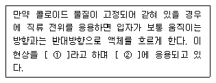
- ① 전기침투현상, ② 슬러지의 탈수
- ① 전기침투현상, ② 슬러지의 농축
- ① 전기영동, ② 슬러지의 탈수
- ① 전기영동, ② 슬러지의 농축
(정답률: 42%)
20. 다음중 옳은 것은?
- 호흡은 영양물질을 고분자물질로 산화분해시키면서 유기적 조직체에 부수적· 단계적으로 에너지를 공급하는 일련의 생물화학적 반응이다.
- 독립영양미생물은 세포질 탄소원으로 유기질을 이용하여 복잡한 영양물질을 만들어 낸다.
- 녹색식물의 광합성은 탄산가스와 물로부터 산소와 포도당 또는 포도당 유도산물을 생산하는 것이 특징이다.
- 공기중의 산소나 수중의 결합산소를 이용하여 호흡하는 미생물을 호기성 미생물이라고 한다.
(정답률: 62%)
2과목: 상하수도계획
21. 양정변화에 대하여 수량의 변동이 적고 또 수량변동에 대해 동력의 변화도 적어 우수용펌프등 수위변동이 큰 곳에 적합한 펌프로 가장 알맞는 것은?
- 원심펌프
- 사류펌프
- 축류펌프
- 수중펌프
(정답률: 43%)
22. 하수도 설치계획시 목표년도는 대략 몇년후를 예상하여 계획하는가?
- 10년
- 20년
- 30년
- 40년
(정답률: 50%)
23. 구경 400mm인 모터의 직렬펌프에서 양수량 10m3/min, 규정전양정 40m, 회전수 1⑤0rpm 일 때 비회전도(Ns)는?
- 58
- 152
- 209
- 314
(정답률: 37%)
24. 직경 D=450mm인 하수용 원심력 철근콘크리트관이 구배 10‰ 로 매설되어 있다. 만수된 상태로 송수된다고 할 때 Manning 공식에 의한 유량(Q)은? (단, 조도계수 n=0.015이다.)
- 약 0.25m3/sec
- 약 0.75m3/sec
- 약 1.25m3/sec
- 약 1.85m3/sec
(정답률: 32%)
25. 배수관로상에 유리관을 세웠을 때 다음 그림과 같은 상태 였다. 이 때 배수관내의 유속은? (단, 수면의 차이는 10cm)
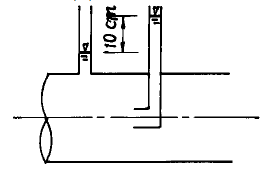
- 1.0m/sec
- 1.4m/sec
- 1.8m/sec
- 2.2m/sec
(정답률: 43%)
26. 펌프 수격작용(Water hammer)의 방지대책이라 할 수 없는 것은?
- 펌프에 플라이 휠(fly wheel)을 붙인다.
- 토출관측에 한방향 조압수조(surge tank)를 설치한다
- 펌프토출측에 급폐체크밸브를 설치한다.
- 유입관측 관로에 압력 릴리프 밸브(pressure relief valve)를 설치한다.
(정답률: 30%)
27. 관경 1,500mm 이하의 하수관을 직선부에 설치하고자 할 때, 맨홀(manhole)의 최대간격은?
- 50m
- 100m
- 150m
- 200m
(정답률: 40%)
28. 도수, 송수, 정수시설을 설계하는데 적용하는 급수량은?
- 1일 최대급수량
- 1일 최대 평균급수량
- 1일 평균급수량
- 시간 최대 평균급수량
(정답률: 36%)
29. 계획오수량에 관한 설명으로 틀린 것은?
- 지하수량은 1인1일최대오수량의 10-20%로 한다.
- 계획시간최대오수량은 계획1일최대오수량의 1일당 수량의 1.5배를 표준으로 한다.
- 합류식에서 우천시 계획오수량은 원칙적으로 계획 시간 최대오수량의 3배 이상으로 하다.
- 계획1일평균오수량은 계획1일최대오수량의 70-80%를 표준으로 한다.
(정답률: 43%)
30. 역 syphon의 설계에 관한 사항으로 틀린 것은?
- 역사이펀실에는 수문설비 및 깊이 0.5m 정도의 이토실을 설치한다.
- 관거의 흙두께는 1m 이상으로 한다.
- 역사이펀실의 깊이가 5m 이상인 경우 중간에 배수 펌프를 설치할 수 있는 설치대를 둔다.
- 관거내의 유속은 상류측 관거내의 유속보다 20-30% 적게 한다.
(정답률: 27%)
31. 천정호(자유수면 우물)의 경우 양수량
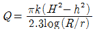
로 표시된다. 반경 0.5m의 천정호 시험정에서 H=6m, h=4m, R=50m의 경우에 Q=10ℓ /sec의 양수량을 얻었다. 이 조건에서 투수계수 k는?- 0.043 m/분
- 0.073 m/분
- 0.086 m/분
- 0.146 m/분
(정답률: 32%)
32. 어느 도시의 상· 하수도 계획을 수립하기 위해 인구를 추정하고자 한다. 1998년부터 2001년 사이의 인구 통계자료를 이용하여 2011년의 인구를 등차급수법에 의해 추정한 것으로 맞는 것은?
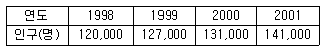
- 194,000 명
- 211,000 명
- 224,000 명
- 242,000 명
(정답률: 29%)
33. 다음 설명중 옳지 않은 것은?
- 펌프의 토출수위와 흡입수위의 차를 실양정이라한다.
- 펌프의 전양정은 실양정과 흡입관로 및 토출관로의 손실수두를 고려하여 정하여야 한다.
- 펌프흡입구의 유속은 1.5-3m/초를 표준으로 한다.
- 배수펌프의 경우에 전양정에 최소동수압에 해당하는 5m를 가산한 수치를 전양정으로 한다.
(정답률: 29%)
34. 펌프효율 η = 80% 이며 전양정 H = 16m인 조건 하에서 양수율 Q=12ℓ /sec로서 펌프를 회전시킨다면 모터의 축동력은? (단, 물의 밀도 r=1,000kg/m3)
- 1.2kw
- 1.7kw
- 2.3kw
- 2.8kw
(정답률: 43%)
35. 복류수(伏流水)를 취수하는 집수매거(관)(集水埋渠(管))에 있어 일반적으로 유공관(有孔管)을 사용하는데 모래가 집수공(集水孔)으로 유입되는 것을 막기위해 가장 타당한 유입속도(流入速度) 기준은?
- 3 cm/sec 이하
- 6 cm/sec 이하
- 10 cm/sec 이하
- 15 cm/sec 이하
(정답률: 38%)
36. 하수도 시설기준에서 오수관거에 관한 설명 중 옳지 않은 것은?
- 계획하수량은 계획시간 최대오수량으로 한다.
- 유속은 최소 0.6m/초, 최대 3.0m/초로 한다.
- 최소 관경은 300mm로 한다.
- 관거의 단면형상은 원형,직사각형,말굽형,계란형 등이 있다.
(정답률: 53%)
37. 다음은 관거의 접합에 관련된 사항들이다. 옳지 않은 것은?
- 접합의 종류에는 관정접합, 관중심접합, 수면접합, 관저접합 등이 있다.
- 관거의 관경이 변화하는 경우의 접합방법은 원칙적으로 수면접합 또는 관정접합으로 한다.
- 2개의 관거가 합류하는 경우 중심교각은 되도록 60°이상으로 한다.
- 지표의 경사가 급한 경우에는 관경변화에 대한 유무에 관계없이 원칙적으로 단차접합 또는 계단접합을 한다.
(정답률: 27%)
38. 하수관거를 매설하기 위해 굴토한 도랑의 폭이 1.8m이다. 매설지점의 표토는 젖은 진흙으로서 흙의 밀도가 2.0t/m3 이고, 흙의 종류와 관의 깊이에 따라 결정되는 계수 C1=1.5 이었다. 이 때 매설관이 받는 하중을 Marston의 방법에 의해 계산하면 얼마인가?
- 2.5t/m
- 5.8t/m
- 7.4t/m
- 9.7t/m
(정답률: 32%)
39. 집수매거의 구조에 대한 설명 중 맞는 것은?
- 집수매거의 경사는 수평하거나 1/500 이하의 완만한 경사로 한다.
- 집수매거의 방향은 복류수의 흐름 방향에 수평이 되도록 설치한다.
- 집수매거의 매설깊이는 1m를 표준으로 한다.
- 집수매거의 집수공은 직경 5-10mm로 하며, 그 수는 관거 표면적 1m2당 200-300개 정도가 되도록 한다.
(정답률: 30%)
40. 유역면적이 100ha 이고 유입시간(time of inlet)이 8분, 유출계수(C)가 0.75 일 때 최대계획우수유출량은? (단, 하수관거의 길이(L)는 400m 이며 관유속(管流速)이 1.2m/sec로 되도록 설계하며
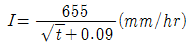
이다. 합리식 적용 )- 3600 m3/sec
- 360 m3/sec
- 36 m3/sec
- 3.6 m3/sec
(정답률: 39%)
3과목: 수질오염방지기술
41. 폭기조 부피가 1000 m3이고 MLSS 농도가 3500 mg/L인데, MLSS 농도를 2500 mg/L로 운전하기 위해 폐기시켜야 할잉여슬러지량(m3)은? (단, 반송슬러지 농도는 8000 mg/L이다.)
- 65 m3
- 85 m3
- 1⑤ m3
- 125 m3
(정답률: 16%)
42. 다음에 주어진 조건을 이용하여 질산화/탈질 혼합반응조에서 요구되는 질소의 반송비 R은? (단, 반송된 질산성 질소는 완전히 탈질되고, 질소동화작용은 무시한다.)
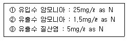
- 2.3
- 2.7
- 3.3
- 3.7
(정답률: 8%)
43. 물리 화학적 방법을 이용하여 질소를 효과적으로 제거하는 공법이 아닌 것은?
- 금속염(Al,Fe) 첨가법
- 탈기법(Air Stripping)
- 이온교환법
- Break Point 염소제거법
(정답률: 18%)
44. 다음은 활성슬러지법에 대한 설명이다. 틀린 것은?
- 동일한 COD제거효율을 얻기위해서는 온도가 감소됨에 따라 F/M비를 감소해야 한다.
- F/M비가 높으면 BOD제거효율은 떨어지게 된다.
- 높은 BOD제거율이 요구되는 경우에 미생물 대수성장 단계에서 운용하여야 한다.
- 폭기시간은 원폐수가 폭기조내에 머무는 시간을 뜻하며 원폐수의 량만을 고려하고 반송슬러지량은 고려하지 않는다.
(정답률: 5%)
45. SVI = 125 일때 반송슬러지 농도(g/m3)는?
- 4000g/m3
- 6000g/m3
- 8000g/m3
- 10000g/m3
(정답률: 20%)
46. SS가 거의 없고 COD가 1500 mg/L인 산업폐수를 활성슬러지 공법으로 처리하여 유출수 COD를 180 mg/L 이하로 처리하고자 한다. 아래의 주어진 조건을 이용하여 반응 시간 θ 를 구한 값으로 적절한 것은?
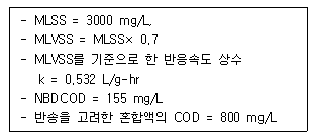
- 12.2 hr
- 17.7 hr
- 22.2 hr
- 27.2 hr
(정답률: 0%)
47. 완전혼합 활성슬러지 공법의 장점과 가장 거리가 먼 것은?
- 산소소모율(oxygen uptake rate)에 있어서 최대 균등화
- 유입물질이 반응조 전체에 빠른시간 내에 분산됨으로 인한 충격부하영향의 최소화
- 호기성생물학적 산화가 일어나는 동안 발생되는 CO2의 최대중화
- 독성물질 유입시 플록(flock) 형성의 안정성
(정답률: 13%)
48. NO3-가 박테리아에 의하여 N2로 환원되는 경우 폐수의 pH는?
- 증가한다
- 감소한다
- 변화없다
- 감소하다가 증가한다
(정답률: 24%)
49. 강산성양이온 교환수지의 이온 교환용량이 수지 1mℓ 당 2.5mg당량인 경우, 수은농도 50mg/ℓ 의 폐수 10m3 중의 수은(Hg2+)을 전부 이온교환으로 흡착제거 시키는데 소요되는 이온 교환 수지의 체적은 몇ℓ 인가? (단, Hg의 원자량은 200임)
- 0.5
- 1.0
- 2.0
- 4.0
(정답률: 20%)
50. 인과 질소의 동시제거가 가능한 방법이 아닌 것은?
- A/O 공법
- 5단계 Bardenpho 공법
- UCT 공법
- VIP 공법
(정답률: 23%)
51. 수중의 암모니아(비이온화된 암모니아)와 암모늄 이온에 대한 설명으로 알맞는 것은?
- 탈기 가능한 부분은 암모늄이온이다.
- 비이온화된 암모니아는 대부분의 자연수에서 무독하나 암모늄이온은 어류에 독성이 있다.
- 두 화학종의 평형은 주로 온도에 의해 결정된다.
- 높은 온도와 높은 pH하에서 비이온화된 암모니아의 농도가 높다 .
(정답률: 8%)
52. 흡착율을 제한하는 물질전달 메카니즘에 대한 설명으로 적절치 못한 것은?
- 용액에서 흡착제 주위의 액체막이나 경계층으로의 용질의 이동
- 액체막을 통한 용질의 확산
- 모세관 벽이나 표면으로의 용질 흡착
- 흡착제내의 모세관이나 공극을 통한 용매흡수
(정답률: 4%)
53. Michaelis-Menten 식에 의하여 정의된 반응의 80%가 완료 되는데 걸리는 시간은? (단, 이때 초기기질농도 = 32mg/ℓ , 최대반응속도 Umax=4.3mg/ℓ · hr, 평형상수 Κ =1.5mg/ℓ 이다.)
- 7.5 hr
- 6.5 hr
- 5.5 hr
- 4.5 hr
(정답률: 0%)
54. 용해성 BOD5가 250mg/L인 유기성 폐수가 완전혼합 활성슬러지 공정으로 처리된다. 유출수의 용해성 BOD5는 7.4mg/L이다. 유량이 18,925m3/day일 때 포기조 용적은?
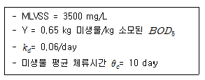
- 3,330 m3
- 4,550 m3
- 5,330 m3
- 6,270 m3
(정답률: 13%)
55. 초심층폭기법(Deep Shaft Aeration System)에 대한 설명 중 틀린 것은?
- 기포와 미생물이 접촉하는 시간이 표준활성슬러지법 보다 길어서 산소전달 효율이 높다.
- 순환류의 유속이 매우 빠르기 때문에 난류상태가 되어 산소전달율을 증가시킨다.
- 부지절감 효과가 있다.
- 활성슬러지공법에 비하여 MLSS농도를 낮게 유지한다.
(정답률: 6%)
56. 활성슬러지 공법을 이용한 폐수처리장에서 반송슬러지 농도가 10000mg/L이고, 폭기조에 MLSS 농도를 2500mg/L로 유지시키고자 한다면 반송률(%)은?
- 13%
- 23%
- 33%
- 43%
(정답률: 5%)
57. 공단내에 새 공장을 건립할 계획이 있다. 공단의 폐수처리장은 현재 876ℓ /s의 폐수를 처리하고 있다. 공단 폐수처리장에서 Phenol 을 제거할 조치를 강구치 않는다면 폐수처리장의 방류수내 Phenol의 농도는 몇 mg/ℓ 으로 예측되는가? (단, 새 공장에서 배출될 Phenol의 농도는 10mg/m3이고 유량은 87.6ℓ /s이며 새공장이외에는 Phenol 배출 공장이 없다 )
- 0.9× 10-3mg/ℓ
- 1.7× 10-2mg/ℓ
- 0.9× 10-2mg/ℓ
- 2.7× 10-3mg/ℓ
(정답률: 5%)
58. 단면이 직사각형인 하천의 깊이가 0.2m로 측정되었고 깊이에 비하여 폭이 무척 넓을 때 동수반경(m)은?
- 0.2
- 0.5
- 0.8
- 1.0
(정답률: 19%)
59. 아래의 조건에서 탈질에 요구되는 무산소반응조(anoxic basin)의 체류시간은?
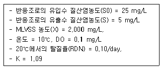
- 4.4 hr
- 5.7 hr
- 6.3 hr
- 7.2 hr
(정답률: 15%)
60. 다음 시스템에서 하수 처리장의 유량(m3/sec)은?
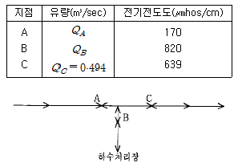
- 0.238
- 0.285
- 0.356
- 0.379
(정답률: 9%)
4과목: 수질오염공정시험기준
61. 시료의 권장보존기간이 가장 짧은 측정항목은?
- 암모니아성질소
- 총질소
- 시안
- 페놀류
(정답률: 25%)
62. 마이크로파를 이용하여 유기물을 분해하는 장치의 개요에 관한 설명으로 틀린 것은?
- 오븐:내부는 플루오르카본등으로 코팅되어 내산성이 있어야 한다.
- 밀폐형 용기:1-3L의 크기로 마이크로파를 흡수하며 고온과 고압에 잘 견딜 수 있어야 한다.
- 회전판:회전속도는 3rpm인 것이 좋다.
- 마그네트론:양극과 음극으로 구성된 원추형의 이극진공관으로 구성되어 있다.
(정답률: 15%)
63. 원자흡광분석의 간섭에 관한 사항중 틀린 것은?
- 분석에 사용하는 스펙트럼선이 다른 인접선과 완전히 분리되지 않은 경우에는 표준시료와 분석시료의 조성을 더욱 비슷하게 하면 간섭의 영향을 피할 수 있다.
- 불꽃중에서 원자가 이온화하는 경우는 이온화 전압이 낮은 알칼리 및 알칼리토류 금속원소의 경우에 많다.
- 물리적간섭은 시료용액의 점성이나 표면장력 등 물리적 조건의 영향에 의하여 일어난다.
- 공존물질과 작용하여 해리하기 어려운 화합물이 생성되어 흡광에 관계하는 기정상태의 원자수가 감소하는 경우는 공존하는 물질이 음이온쪽이 영향이 크다.
(정답률: 18%)
64. 수질오염공정시험방법중 이온크로마토그래피법에 관한 설명으로 적절치 못한 것은?
- 물 시료중 음이온의 정성 및 정량분석에 이용된다.
- 시료중 저급유기산의 방해를 제거하기 위해 황산(1+4) 2mL이하를 주입하여 분석한다
- 액체시료를 이온교환컬럼에 고압으로 전개시켜 분리되는 각 성분의 크로마토그램을 작성하여 분석한다.
- 기본구성은 용리액조, 시료주입부, 액송펌프, 분리컬럼, 검출기 및 기록계로 구성되어 있다.
(정답률: 24%)
65. 시료의 보존방법 중 4℃, H2SO4로 pH 2이하로 해야 되는 항목은?
- 생물화학적산소요구량
- 부유물질
- 총질소
- 질산성질소
(정답률: 8%)
66. 대장균군의 분석실험방법에 대한 설명중 옳지 않은 것은? (단, 최적확수 시험법 기준)
- 결과는 MPN/100mL의 단위로 표시한다
- 대장균군의 정성시험은 추정시험, 확정시험 및 완전시험의 3단계로 나눈다
- 시험장치로는 막여과장치, 멸균된 메스실린더, 멸균된 페트리디쉬등이 필요하다.
- 시료를 유당이 포함된 배지에 배양할 때 대장균군이 증식하면서 가스를 생성하는데 이때의 양성 시험관수를 확률적인 수치인 최적확수로 표시하는 방법이다.
(정답률: 0%)
67. 0.025N - KMnO4(MW = 158) 용액을 만들려면 어떻게 조제하면 되겠는가?
- KMnO4 8.1g을 증류수에 녹여 전량을 1ℓ 로 한다.
- KMnO4 3.4g을 증류수에 녹여 전량을 1ℓ 로 한다.
- KMnO4 1.8g을 증류수에 녹여 전량을 1ℓ 로 한다.
- KMnO4 0.8g을 증류수에 녹여 전량을 1ℓ 로 한다.
(정답률: 18%)
68. 다음은 BOD 측정용 시료의 전처리 조작에 관한 설명이다. 이 중 옳지 않은 것은?
- 산성인 시료는 4% NaOH로 중화시킨다.
- 알칼리성 시료는 염산(1+11)으로 중화시킨다.
- 잔류염소를 함유한 시료는 일반적으로 BOD용 식종 희석수로 희석 사용한다.
- 수온이 20℃ 이상인 시료는 10℃ 이하로 식힌후 통기시켜 산소를 포화시켜 준다.
(정답률: 34%)
69. 가스크로마토그라피(Gas Chromatography)에 사용되는 검출기(Detector) 중 유기할로겐 화합물에 대해 특히 감도가 좋은 것은?
- Flame ionization detector
- Thermal conductivity detector
- Electron capture detector
- Alkali flame detector
(정답률: 15%)
70. 다음 물질을 흡광광도법으로 분석할 때 측정 파장이 가장 긴 것은?
- 구리
- 아연
- 카드뮴
- 크롬
(정답률: 15%)
71. 비소시험법중 원자 흡광광도법의 측정원리로 틀린 것은?
- 염화제일주석으로 시료중 비소를 3가비소로 환원 시킨다
- 염산히드록실아민용액으로 비화수소를 발생시킨다.
- 운반가스는 아르곤, 연소가스는 아르곤-수소이다.
- 불꽃에서 원자화시켜 193.7nm에서 흡광도를 측정하여 정량한다.
(정답률: 7%)
72. 유도결합 플라스마 발광분석 장치의 플라스마 토오치 및 시료주입부의 형식에 따른 일반적인 가스유량이 잘못된 것은?
- 냉각가스는 10 - 20L/분이다.
- 보조가스는 0.5 - 2L/분이다.
- 운반가스는 0.4 - 2L/분이다.
- 연소가스는 0.3 - 2L/분이다.
(정답률: 0%)
73. 가스크로마토그래피법의 기본구성 장치에 관한 설명으로 틀린 것은?
- 운반가스유로는 유량조절부와 분리관유로로 구성된다.
- 가스시료도입부는 가스계량관과 유로변환기구로 구성 된다.
- 분리관오븐의 온도정밀도는 ± 1.0℃의 범위이내, 전원 전압변동은 5%이내를 유지할 수 있어야 한다.
- 기록계는 스티립 차아트식 자동평형 기록계로 스팬전압 1mV, 팬응답시간 2초이내, 기록지 이동속도 10mm/분을 포함한 다단변속이 가능한 것이어야 한다.
(정답률: 9%)
74. 에탄올(C2H5OH) 92㎎에 증류수를 가하여 1ℓ 로 한 용액의 이론적 COD는?
- 162㎎/ℓ
- 178㎎/ℓ
- 184㎎/ℓ
- 192㎎/ℓ
(정답률: 9%)
75. 시안(CN) 시료중 잔류염소가 공존할 경우 시료의 보존 방법은?
- 황산구리 1g/ℓ 첨가
- 아스코르빈산 1g/ℓ 첨가
- 수산화나트륨 2㎖/ℓ 첨가
- 아미노안티피린용액 2㎖/ℓ 첨가
(정답률: 7%)
76. 배출허용기준 적합여부 판정을 위한 시료채취시 복수 시료채취방법 적용을 제외할 수 있는 경우가 아닌 것은?
- 환경오염사고, 취약시간대의 환경오염감시등 신속한 대응이 필요한 경우
- 부득이 복수시료채취 방법으로 할 수 없을 경우
- 유량이 일정하며 연속적으로 발생되는 폐수가 방류되는 경우
- 사업장내에서 발생하는 폐수를 회분식등 간헐적으로 처리하여 방류하는 경우
(정답률: 15%)
77. 다음은 페놀류의 분석에 대한 측정원리이다. ( )안에 가장 알맞는 내용은?
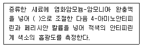
- pH 9
- pH 10
- pH 11
- pH 12
(정답률: 14%)
78. 유입부의 직경이 100cm, 목(throat)부 직경이 50cm인 벤튜리미터로 폐수가 유출되고 있다. 이 벤튜리미터 유입 부관 중심부에서의 수두는 100cm, 목(throat)부의 수두는 10cm일 때 유량(cm3/sec)은? (단, 유량계수는 1.0 이다.)
- 약 552000
- 약 652000
- 약 752000
- 약 852000
(정답률: 15%)
79. 다음은 질산성질소 측정시 흡광광도법 중 부루신법에 관한 것이다. 시험방법이 잘못된 것은?
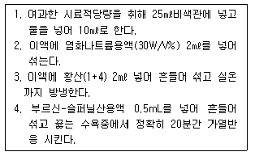
- 1
- 2
- 3
- 4
(정답률: 5%)
80. 수질오염공정시험방법상 '망간' 측정방법이 아닌 것은?
- 원자흡광광도법
- 흡광광도법
- 유도결합플라스마 발광광도법
- 가스크로마토그리피법
(정답률: 23%)
5과목: 수질환경관계법규
81. 배출부과금을 부과할 때 고려하여야 하는 사항과 가장 거리가 먼 것은?
- 배출허용기준의 초과여부
- 자가측정의 여부
- 오염물질 배출농도
- 배출되는 오염물질의 종류
(정답률: 12%)
82. 다음 배출부과금의 부과내용에 관한 기술 중 틀린 것은?
- 폐수· 하수 종말처리시설등에서 방류수 수질기준이하로 배출하는 사업자에 대하여는 부과하지 아니한다.
- 대통령령이 정하는 양이하의 수질오염물질을 배출하는 사업자는 부과를 감면할 수 있다.
- 다른 법률의 규정에 의하여 수질오염물질의 처리비용을 부담한 사업자는 부과대상에서 제외된다.
- 배출부과금을 납부하여야 할 자가 소정의 기간내에 이를 납부하지 않을 경우 가산금을 징수한다.
(정답률: 10%)
83. 총량규제를 하고자 할 때 환경부장관이 고시하여야 하는 사항으로 맞지 않는 것은?
- 규제구역
- 규제오염물질
- 규제오염물질배출 기준
- 오염물질 저감계획
(정답률: 0%)
84. 다음 폐수배출시설 중 과징금 처분대상 배출시설이 아닌 것은?
- 석유사업법 규정에 의한 석유비축계획에 따라 설치된 석유비축시설
- 고등교육법에 의한 학교의 배출시설
- 수도법 규정에 의한 수도시설
- 정부출연연구기관설립· 운영 및 육성에 관한 법률에 의한 연구기관의 배출시설
(정답률: 12%)
85. 다음 중 특정수질 유해물질이 아닌 것은?
- 디클로로메탄
- 니켈 및 그 화합물
- 구리 및 그 화합물
- 셀레늄 및 그 화합물
(정답률: 0%)
86. 다음중 수질(하천)의 환경기준 항목이 아닌 것은?
- 수소이온농도
- 대장균 군수
- COD
- D0
(정답률: 12%)
87. 초과부과금대상오염물질이 아닌 것은?
- 카드뮴 및 그 화합물
- 사염화탄소
- 총 인
- 아연 및 그 화합물
(정답률: 12%)
88. 수질오염방지시설 중 생물화학적 처리시설이 아닌 것은?
- 접촉조
- 살균시설
- 돈사톱밥발효시설
- 폭기시설
(정답률: 28%)
89. 환경부장관 또는 시· 도지사가 측정망 설치계획을 결정·고시한 경우 허가를 받은 것으로 보는 행정행위가 아닌것은? (단, 법률 조항은 적절한 조항으로 한다)
- 공원법 규정에 의한 공원의 점,사용 허가
- 하천법 규정에 의한 하천공사시행의 허가 및 하천점용의 허가
- 공유수면관리법 규정에 의한 공유수면의 점,사용허가
- 도로법 규정에 의한 도로점용의 허가
(정답률: 12%)
90. 배출시설의 설치허가를 받은자가 변경허가를 받아야 하는 경우가 아닌 것은?
- 폐수배출량이 허가당시보다 100분의 50이 증가되는 경우(특정수질유해물질의 배출이 아님)
- 폐수배출량이 허가당시보다 1일 600m3이 증가되는 경우
- 특정수질유해물질이 배출되는 시설에서 폐수배출량이 허가당시보다 100분의 35가 증가되는 경우
- 배출허용기준을 초과하는 새로운 오염물질이 발생되어 배출시설 또는 방지시설의 개선이 필요한 경우
(정답률: 12%)
91. 시,도지사가 배출시설 및 방지시설의 가동상태를 점검하기 위해 채취한 오염물질 측정을 의뢰할 수 있는 오염도검사기관으로 적절하지 않는 곳은?
- 환경관리공단법에 의한 환경관리공단의 소속사업소
- 유역환경청 및 지방환경청
- 환경기술 개발 및 지원에 관한 법률에 의한 측정 대행업소
- 국립환경연구원 및 그 소속기관
(정답률: 6%)
92. 폐수배출시설에 대한 배출부과금 납부자가 부과금을 납부할 수 없다고 인정하는 경우 징수를 유예할 수 있는 기간과 분할 납부 가능 횟수는?
- 징수유예기간 : 6월이내, 분할납부횟수 : 2회이내
- 징수유예기간 : 6월이내, 분할납부횟수 : 3회이내
- 징수유예기간 : 1년이내, 분할납부횟수 : 6회이내
- 징수유예기간 : 2년이내, 분할납부횟수 : 8회이내
(정답률: 6%)
93. 특례지역에서 운영중인 배출시설의 폐수배출량이 1일 2,000m3미만일 때 COD 배출농도 기준은?
- 30mg/ℓ 이하
- 40mg/ℓ 이하
- 50mg/ℓ 이하
- 70mg/ℓ 이하
(정답률: 13%)
94. 폐수처리업의 등록을 한 자에게 위탁처리할 수 있는 폐수의 배출량기준은? (단, 물리적· 화학적 처리시설에 의해 처리가 가능한 폐수이며 배출시설의 설치를 제한할 수 있는 지역이 아닌 경우)
- 1일 50m3 미만
- 1일 30m3 미만
- 1일 20m3 미만
- 1일 10m3 미만
(정답률: 6%)
95. 오수처리시설 또는 단독정화조을 등록한 자 또는 등록하고자 하는 자가 제조· 판매하고자 하는 오수처리시설 또는 단독정화조의 성능이 구조· 규격· 재질 및 성능에 관한 기준에 적합한지 여부를 검사 받고자 하는 경우 그 성능검사를 실시할 수 있는 기관은?
- 국립환경연구원
- 환경관리공단
- 시· 도보건환경연구원
- 국립품질검사원
(정답률: 23%)
96. 사업자가 최초로 배출시설을 설치한 경우에 환경관리인의 임명을 신고하여야 하는 기간은?
- 환경관리인을 임명한 후 지체없이
- 가동개시신고와 동시에
- 방지시설에 대한 시운전기간 완료전
- 환경관리인을 임명한 후 5일이내
(정답률: 0%)
97. 폐수처리방법이 물리적 또는 화학적 처리방법인 경우 적정 시운전 기간은? (단, 가동개시일 12월 1일이다 )
- 가동개시일 부터 10일
- 가동개시일 부터 20일
- 가동개시일 부터 30일
- 가동개시일 부터 50일
(정답률: 18%)
98. 낚시금지구역에서 낚시를 한 자에 대한 벌칙기준으로 적절한 것은?
- 100만원 이하 과태료
- 100만원 이하 벌금
- 6월이하의 징역 또는 200만원 이하 벌금
- 1년이하의 징역 또는 500만원 이하 벌금
(정답률: 6%)
99. 기본부과금의 부과는 몇번으로 하는가?
- 1년에 1회
- 1년에 2회
- 1년에 3회
- 1년에 4회
(정답률: 14%)
100. 초과부과금의 산정기준인 1킬로그램당 부과액이 가장 많은 오염물질은?
- 카드뮴 및 그 화합물
- 수은 및 그 화합물
- 비소 및 그 화합물
- 트리클로로에틸렌
(정답률: 20%)